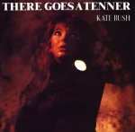
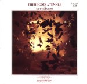

(These lyrics were originally from Andrew Marvick's
The Garden.)
 The
Dreaming page
The
Dreaming page
Album/Era
Alphabetical
Gaffaweb
"There Goes a Tenner"
The Dreaming
Written by Kate Bush


- Okay, remember.
- Okay, remember
- That we have just allowed
- Half an hour
- To get in, do it, and get out.
- The sense of adventure
- Is changing to danger.
- The signal has been given.
- I go in.
- The crime begins.
- My excitement
- Turns into fright.
- All my words fade.
- What am I gonna say?
- Mustn't give the game away.
-
- We're waiting.
- We're waiting.
- We're waiting.
- We got the job sussed.
- This shop's shut for business.
- The lookout has parked the car,
- But kept the engine running.
- Three beeps means trouble's coming.
- I hope you remember
- To treat the gelignite tenderly for me.
- I'm having dreams about things
- Not going right.
- Let's leave in plenty of time tonight.
- Both my partners
- Act like actors:
- You are Bogart,
- He is George Raft,
- That leaves Cagney and me.
-
- ("What about Edward G.?")
-
- We're waiting.
- We're waiting.
- We're waiting.
- You blow the safe up.
- Then all I know is I wake up,
- Covered in rubble. One of the rabble
- Needs mummy.
- ("What's all this then?")
- The government will never find the money.
- ("What's all this then?")
- I've been here all day,
- A star in strange ways.*
- Apart from a photograph
- They'll get nothing from me,
- Not until they let me see my solicitor.
- Ooh, I remember
- That rich, windy weather
- When you would carry me,
- Pockets floating
- In the breeze.
- Ooh, there goes a tenner.
- Hey, look! There's a fiver.
- There's a ten-shilling note.
- Remember them?
- That's when we used to vote for him.
*--"A star in strange ways." In addition to the whispered
question "What's all this then?" (spoken twice), additional words are
spoken in the vicinity of this line (which seems to be a pun on Strangeways
prison). These words have never been satisfactorily deciphered, but they appear
to be a snatch of conversation, running perhaps as follows:
- Whispered Voice Number One: "What are we gonna do with the money?"
- Whispered Voice Number Two: "I've got it!" (This is only a
guess.)]
In one of her descriptions of this song Kate supplied a few related
lines of verse. They appear to be additional lyrics to There Goes a Tenner,
although the meter is a little different. Here are Kate's remarks in toto,
taken from her self-penned article "explaining" the album The
Dreaming:
"Everybody synchronize watches. Remember there's only half an
hour to do the job. We've been rehearsing for weeks, so nothing should go
wrong. Let's run through it one more time:
"I go in and distract the guard, Frank's out the back in the
getaway car, The sign on the door turns from open to shut, We keep
them all covered, you blow the safe up, We grab the cash, make a hasty
retreat, And tear across London using the backstreets. Remember, be
careful, give nothing away, The arm of the Law is as long as they say."
"There's beauty in such a sacred structure...": see: Pick the
Rare Flower
©1982 Novercia Ltd.
The
Dreaming page
{kind=link}
{kind=link}